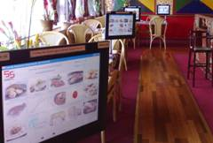
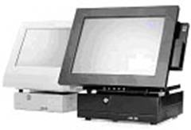

| 挪威高樂科技公司 MPos Norway | |||||||
餐飲便利、超市、零售 |
|||||||
|
||产品简介 | ||開戶優惠 | ||支援計劃 | ||業務聯絡 |


Mpos Cheung http://www.mpos.cc
(org.991 514 198) (挪威注冊合法軟件公司) 套裝優惠Kr.29.600,-
包括 : MPos《餐飲便利》專利軟件 + 單面觸摸屏幕硬件套裝 + 收銀錢箱 +
高速熱敏式打印機 + 6個月軟件保養及支援服務 + 一年硬件保養。
一體單面觸摸屏幕15吋硬件套裝 + 收銀錢箱 + 高速熱敏式打印機 + 6個月軟件保養及支援服務.Kr.29.600,-
Amonpos單面觸摸屏幕15吋硬件套裝 + 收銀錢箱 + 高速熱敏式打印機 + 6個月軟件保養及支援服務.Kr.39.600,-
Amonpos (以取三項專利；專利防水設計 / 專利電動角度調整設計 / 專利揵盤設計.)
MPos《餐飲便利》軟件 Kr.12.000,-
為推廣本公司強大易用的餐飲便利軟件給更多人受惠，本公司從2008年一月開始推出免費借機服務！沒有時間限制！沒有硬件損壞賃任！免費半年軟件支援！每月只需付軟件租用費( kr.1.290,- )

自助訂餐:( 全國獨一無二 )
(特點) 減少人手工作！減少人為錯誤！增強競爭力！
售價: 每{點}Kr.19.800,-

MPos豐富功能
* 餐廳及快餐形式操作 * 多貨幣兌換處理
* 無限制食品及菜單輸入數量 * 多種付款方式
* 食品分類輸入 * 稅項及小費處理
* 套餐自由搭配 * 客戶自訂單據式樣
* 資料即時更新及傳輸 * 全功能銷售分析報表
* 自訂多層密碼保安控制 * 不同時段更新價品價格
* 挪英版同時擁有 * 連鎖式店舖數據處理系統 (可配昇級版)
一體單面觸摸屏幕淨硬件Kr. 16.800,-